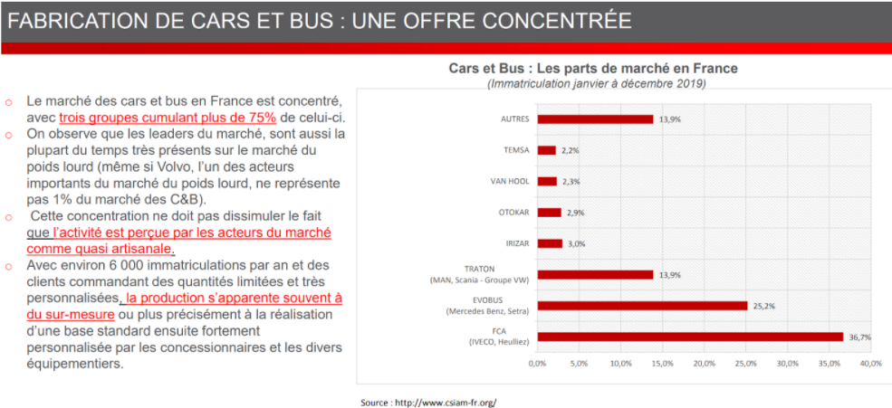

La compagnie que nous étudions ici, EvoBus, possède 25,0 % du marché total des bus contre 36, % pour son concurrent direct FCA et 13,9 % pour l’entreprise TRATON.
Ces trois groupes ci, concentrent à eux seuls plus de 75 % du marché des us contre 25 % pour les autres concurrents directs.
Le plus gros leader du marché, FCA, on le retrouve également dans un autre secteur que celui des bus et c’est dans le secteur des poids lourds, il diversifie ses produits en fonction de la demande.
L’activité de la production de bus est perçue comme une activité dite quasi-artisanale. Ce qui signifie en d’autres termes que c’est une construction sur mesure, soit une base standard qui peut ête changée en fonction de la demande/désir du client.
